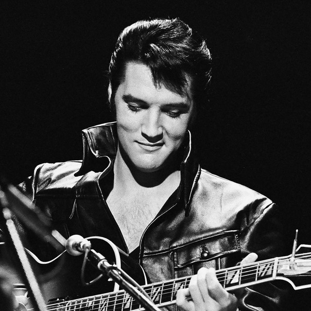

Ben&Ben
Ben&Ben
Ben&Ben, formerly known as The Benjamins, is an folk pop/pop rock band in the Philippines. Formed in 2015, the band has since been known for their popular hits such as "Ride Home", "Leaves", "Maybe the Night", "Pagtingin", "Lifetime", "Doors", and the critically acclaimed "Kathang Isip".
2120
141
Justin Bieber
Justin Bieber
A Canadian singer-songwriter and multi-instrumentalist.[4][5] Bieber was signed to RBMG Records in 2008. With Bieber's debut EP My World, released in late 2009, Bieber became the first artist to have seven songs from a debut record chart on the Billboard Hot 100.
2120
141

Elvis Aaron Presley
Elvis Presley
An American singer, musician and actor. He is regarded as one of the most significant cultural icons of the 20th century and is often referred to as the "King of Rock and Roll". His energized interpretations of songs and sexually provocative performance style, combined with a singularly potent mix of influences across color lines during a transformative era in race relations, led him to both great success and initial controversy.
2120
141

Barack Hussein Obama II
Obama
An American politician and attorney who served as the 44th president of the United States from 2009 to 2017. A member of the Democratic Party, Obama was the first African-American president of the United States. He previously served as a U.S. senator from Illinois from 2005 to 2008 and as an Illinois state senator from 1997 to 2004.
2120
141